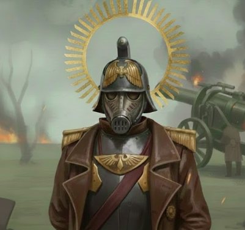

Номер/имя: 0012-7026 «Кранс»
Звание: Лейтенант
Должность: Офицер | Старший гренадер | Командир 65-й бригады гренадёров
Возраст: 24 года
Место рождения: Мир-Смерти Криг
Текущий статус: АКТИВЕН

Подпись офицера, утвердившего личное дело:

Дата утверждения: 19.11.103.М42
Возраст зачисления в новобранцы: 13 лет
Возраст зачисления в шутце: 14 лет
Место призыва: Гарнизонный призывной пункт №115, Подземный Улей A-12, Мир-Смерти Криг
Награды и поощрения:
— Медали: Печать Чистоты, "Простой Орёл", Медаль за освобождение Хайленда,
Серебряный Череп, Алый Медальон, Медаль "Окопного Штурмовика",
"Крест Выдающейся Службы"
Взыскания и дисциплинарные меры:
— ОТСУТСТВУЮТ
Служебные записи (Хронология службы 7026 «Кранс»):
[1] Дата: 03.01.098.М42
Должность / роль: Рекрут, рабочая бригада подземных катакомб Крига
Назначен в рабочие тех-бригады по расширению подземных тоннелей.
Проявил способности к сварке, укреплению конструкций и работе с взрывчаткой.
[2] Дата: 11.04.100.М42
Должность / роль: Шутце, 7-й Осадный Полк Крига
Прибыл на корабль «Клинок Вентана» в составе пополнения.
Прошёл усиленную подготовку по миномётным расчётам.
[3] Дата: 22.07.100.М42
Должность / роль: Обер-Шутце, Наводчик миномётного расчёта
Участие в кампании против Империи Тау. Отличился точностью корректировки огня.
Переквалифицирован в связисты, получил вокс-станцию.
[4] Дата: 09.02.101.М42
Должность / роль: Ефрейтор, Связист 7-го Полка
Участие в Харионской кампании против четырёх варп-банд.
Получил огнемёт как основное оружие. Пережил катастрофическое поражение сил Империума.
[5] Дата: 10.02.101.М42
Должность / роль: Ефрейтор, Связист
Свидетель гибели Квартирмейстера 8911, добровольно оставшегося снабжать бойцов до последнего.
Этот эпизод стал ключевым в становлении 7026.
[6] Дата: 18.06.101.М42
Должность / роль: Ефрейтор, Личная охрана Герр Оберста Лавра Мазанова
Добровольно вызвался в новый состав после потерь. Назначен в охрану командира.
Отправлен на Малакбель.
[7] Дата: 01.09.101.М42
Должность / роль: Ефрейтор, Особый Контингент
После исчезновения связи с Малакбелем уцелела лишь сотня криговцев.
Взяты под надзор Оффицио Префектус.
Начали службу как надзорный отряд над остальной гвардией
под командованием Капитана-комиссара Игнатия Грозного.
[8] Дата: 14.03.102.М42
Должность / роль: Фельдфебель, Надзорный отряд
Во время кампании против орков спас отряд, подняв строительным краном
тяжёлый орочий танк, дав возможность уничтожить его.
Получил прозвище «Крансфюнхер».
[9] Дата: 20.03.102.М42
Должность / роль: Фельдфебель, Надзорный отряд
Гауптман 1917 Апис Вернер Крот закрепил прозвище в документах
в укороченном варианте — «Кранс».
[10] Дата: 07.09.103.М42
Должность / роль: Унтер-Офицер, Командир сварочной бригады
Возглавил сварочные подразделения на планете Кефаль.
По итогам кампании утверждён в офицерской должности.
[11] Дата: 02.10.103.М42
Должность / роль: Лейтенант 7-го Корпуса Смерти Крига
После прибытия сил Похода на Иллидриан Лейтенант 7026 «Кранс»
был рекомендован Гауптманом 1389 Регелем Туркулом к расширенным обязанностям
и включён в офицерский состав
благодаря опыту кампаний на Харионе, Даготе-1 и иных нестандартных операциях.
[12] Дата: 08.10.103.М42
Должность / роль: Лейтенант
Участвовал в подземных операциях по зачистке биоформ,
угрожавших целостности почвенных слоёв.
[13] Дата: 10.10.103.М42
Должность / роль: Лейтенант
Участвовал в боевых действиях против ксеносов, обнаруженных в недрах Иллидриана.
[14] Дата: 20.10.103.М42
Должность / роль: Лейтенант
Участвовал в подавлении бунтов Харонского полка против сил Оффицио Префектус,
обеспечивал поддержку и оказание первой медицинской помощи раненым.
[15] Дата: 25.10.103.М42
Должность / роль: Лейтенант
Принял командование в операции на Гераль-Примус,
возглавив ударные силы 7-го Осадного Корпуса по приказу Гауптмана 1389 Регеля Туркула.
[16] Дата: 27.10.103.М42
Должность / роль: Лейтенант, Командующий корпусом (временно)
Организовал оборону и управление составом 7-го Корпуса
во время кампании на Гераль-Примусе.
На период операции официально назначен командующим силами
7-го Корпуса Смерти Крига.
[17] Дата: 03.11.103.М42
Должность / роль: Лейтенант, Исполняющий обязанности командира корпуса
Возглавил марш-бросок к ПКО.
[18] Дата: 05.11.103.М42
Должность / роль: Лейтенант
Участвовал в организации обороны ПКО и размещении сил.
Провёл прощальные ритуалы Гауптману 1389 Регелю Туркулу
вместе с Обер-Лейтенантом 1388 Штайнерром и Старшим Квартирмейстером.
[19] Дата: 10.11.103.М42
Должность / роль: Лейтенант
После эвакуации с Гераль-Примус Лейтенант 7026 «Кранс»
был отмечен наградами штаба Крига, включая Серебряный Череп.
Звание и идентификатор подтверждены как действующие.
Общий статус годности:
Рост: 175 см Вес: 80 кг
Слух: Категория "А" Зрение: Категория "А"
Перенесённые ранения и повреждения:
— Множественные пулевые ранения и шрамы. Аугментация левой руки.
Обстоятельства: Проведение боевых операций.
Лечение: Самостоятельное лечение, Штаб Квартирмейстеров
7-го Осадного Корпуса Смерти Крига.
Импланты и протезы:
— Аугментация левой руки
— Вставные зубы
Обстоятельства: Ранение на Кефали со стороны оркоидов.
Лечение: Аугмент установил Магос Биологис Опиум Х.
Психическое состояние:
— Шаткое. Предположительно, из-за множественных ранений головы
может вести себя нестабильно.
Осмотр провёл(а): Старший Квартирмейстер, Обер-Фельдфебель 8911 Кагори
Дата осмотра: 16.11.103.М42
КРАТКАЯ БИОГРАФИЯ 7026 «КРАНС»:
7026 родился в стандартных условиях подулья Крига и с ранних лет
проявил способности к работе с техникой и взрывчаткой,
за что был определён в рабочие бригады по расширению подземных катакомб.
Попав в 7-й Осадный Полк, прошёл путь от миномётного наводчика до связиста,
отличившись дисциплиной и точностью.
Первое крупное боевое испытание он пережил в кампании против Тау,
а затем участвовал в Харионских боях против варп-банд,
где лишился товарища и наставника — Квартирмейстера 8911,
чья смерть глубоко на него повлияла.
Позже 7026 был зачислен в личную охрану Герр Оберста Лавра Мазанова,
а основной состав в числе двухсот тысяч был отправлен на Малакбель —
мир, с которого никто не вернулся.
После исчезновения корпуса и гибели большей части сил
уцелевшая сотня криговцев, включая 7026, была взята под надзор
Оффицио Префектус и использована как вспомогательные силы
внутреннего контроля над гвардией.
Сочетание раннего опыта работы в катакомбах, службы в миномётных расчётах,
связи и надзорных подразделениях сформировало из 7026 офицера,
привыкшего держать строй в условиях постоянной потери личного состава.
Его склонность к импровизации при обращении с техникой и взрывчаткой
сочетается с фанатичной преданностью дисциплине Крига,
что и привело к дальнейшему повышению до командования 65-й бригадой гренадёров.
Прозвище «Кранс»:
На одной из кампаний против орков отряд гвардейцев оказался зажат у входа в улей.
В центре площади стоял массивный строительный кран. Фельдфебель 7026, не раздумывая,
забрался в кабину и сумел поднять на тросе тяжёлый орочий танк, дав возможность
сослуживцам расстрелять его из ракетниц.
За этот поступок бойцы начали называть его «Крансфюнхер»
(в диалекте Крига — «крановщик»). Позднее Гауптман 1917 Апис Вернер Крот
закрепил прозвище в официальных документах, сократив его до «Кранс».